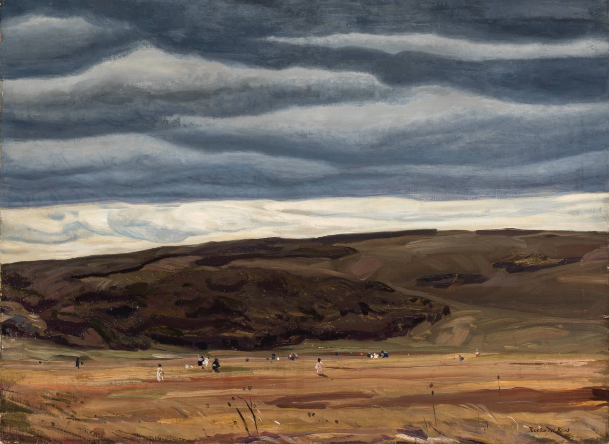

Рокуэлл Кент
Cranberrying, Monhegan (Сбор клюквы, Монхиган),1907

Холст, масло, 71,3 x 97,2 см
Государственный художественный музей Платтсбурга, Галерея Рокуэлла Кента, Платтсбург.
Мистер Дэн Берн Джонс, Ок-Парк, Иллинойс Коллекция фонда искусств "Terra", Чикаго, Иллинойс, 1983 г. (подарок мистера Дэна Берн Джонса)
Крошечные фигурки разбросаны по клюквенному болоту под травянистым хребтом и низким стальным небом в драматической картине Рокуэлла Кента "Сбор клюквы, Монхиган". Простая композиция разделена на широкие полосы неба и земли, каждая из которых снова разделена: поле и далёкий хребет внизу, и более светлое и более тёмное небо наверху. Нанесение краски широкими, размашистыми мазками дополняет безграничную широту и глубину пейзажа. На переднем плане редкий травяной покров, переданный быстрыми мазками краски, указывает на непрекращающийся ветер, оживляющий мрачный пейзаж острова Монхиган, штат Мэн. Побережье штата Мэн привлекало художников с середины XIX века. Искатель приключений и любитель активного отдыха, любивший уединённые места и суровый климат, Кент впервые посетил Монхиган в 1905 году. Он построил там себе дом и часто возвращался; в 1910 году он даже открыл сезонную школу для некоторых художников, которые вместе с туристами приезжали летом в Монхиган. Однако в своих картинах Кент сохранил образ острова как изолированного места, где человечество, представленное выносливыми местными жителями, встречается лицом к лицу с первозданной природой. Только сдержанные оттенки тускло-красного, напоминающие о концентрации спелых ягод на далёкой коричневатой земле, подтверждают название этой работы Кента. Показанное место, несомненно, является "большой ровной местностью", которую Кент описал в своей автобиографии как расположенную между деревней Монхиган и хребтом Хорнс-Хилл: "полгода здесь растёт клюквенное болото, а вторую половину года оно заливается водой и превращается в пруд для катания на коньках". В XIX веке трудоёмкий сбор этой дикорастущей американской ягоды, произрастающей в низинных прибрежных районах, был воспет как общинный ритуал, что особенно заметно на знаменитой картине художника Истмена Джонсона "Сбор клюквы на острове Нантакет" 1874 года (Музей искусств Тимкена, Сан-Диего). Кент, напротив, расставляет своих собирателей поодаль от зрителя, как бы подчеркивая их изолированность и небольшие размеры, отдалённость самого острова.